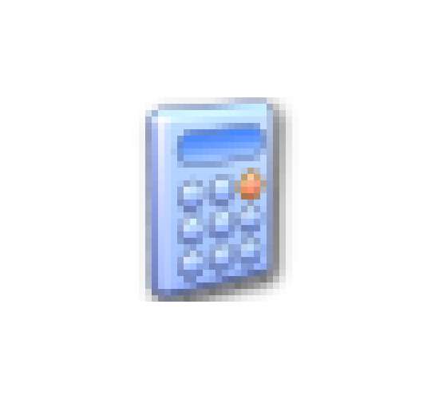
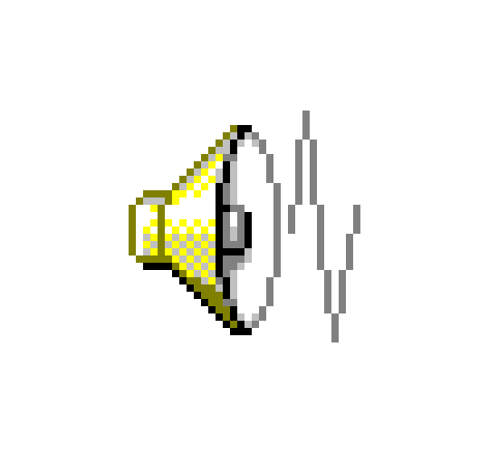

<!DOCTYPE html>
<html lang="fr">
<head>
    <meta charset="utf-8">
    <meta name="viewport" content="width=device-width, initial-scale=1">
    <title>Windaube XP</title>

    <link rel="stylesheet" href="styles/style.css">

    <script type="module" src="scripts/data.js"></script>
    <script type="module" src="scripts/main.js"></script>

    <script src="https://cdn.jsdelivr.net/npm/marked/marked.min.js"></script>
</head>
<body>
    <footer>
        <button class="button" id="start">
            
            <span>Start</span>
        </button>

        <div id="apps">
            
            
        </div>

        <div id="left_gui"></div>

        <div id="sep"></div>

        <div id="right_gui" class="onglets">
            
            <span id="time">22:22</span>
        </div>
    </footer>
    <script type="module">
        import { load_desktop } from './scripts/main.js';
        import { desktop } from './scripts/data.js';

        const container = document.createElement("div");
        container.style = "width: 100%; height: calc(100% - 50px); display: flex; flex-direction: online; justify-content: space-between;";
        document.body.appendChild(container);

        load_desktop(desktop, container);
        load_desktop(desktop[4]["content"], container, 3);
    </script>
</body>
</html>
